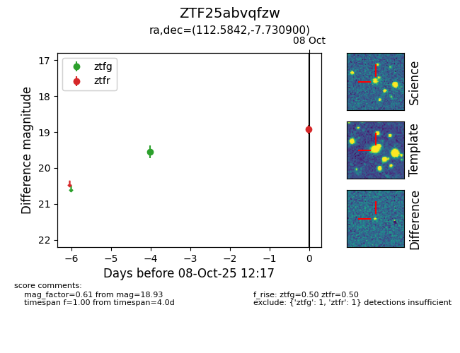

FINK: ZTF25abvqfzw
Lasair: ZTF25abvqfzw
ALeRCE: ZTF25abvqfzw
ZTF25abvqfzw (ztf,fink)
equatorial (ra, dec) = (112.5842,-7.73090)
galactic (l, b) = (224.2819,+5.02708)

last ztfg=19.55, ztfr=18.93
1 ztfg, 1 ztfr detections